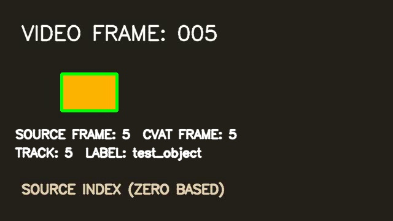

Video task and media
A numbered 60-frame MP4, label, job, and media metadata are created and inspected through CVAT.
Verified CVAT integration / Python + REST API
A compact engineering test that creates a CVAT video task, writes a tracked rectangle, exports the annotations, imports them into a clean task, and checks the result frame by frame.

What this proves
The test reads back what CVAT actually produced. A successful upload alone is never treated as the final result.
A numbered 60-frame MP4, label, job, and media metadata are created and inspected through CVAT.
One rectangle track becomes CVAT video XML, then returns to a second clean task without a frame or coordinate shift.
Python compares live annotations, both CVAT exports, and CVAT-served frames against the source video.

Frame indexing / measured
For frames 5, 10, and 20, CVAT’s served frame image matched the same zero-based source frame. Annotation API values, exported XML, and imported annotations kept those frame IDs.
The result
The complete run produced source task 4 and round-trip task 5 on CVAT 2.76.0. The validator exited successfully after reading both tasks from the server.
Video · task metadata · annotations · export · re-import · frame alignment
Every step is reproducible from the repository.